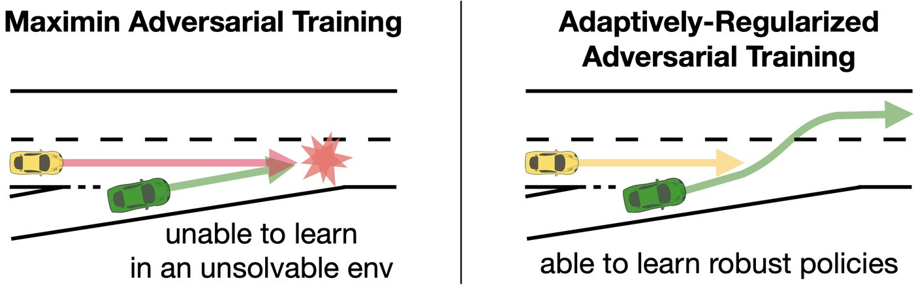
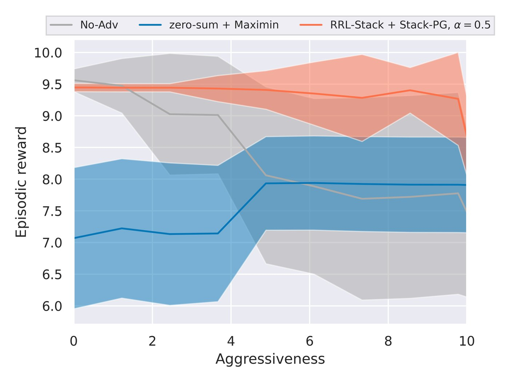
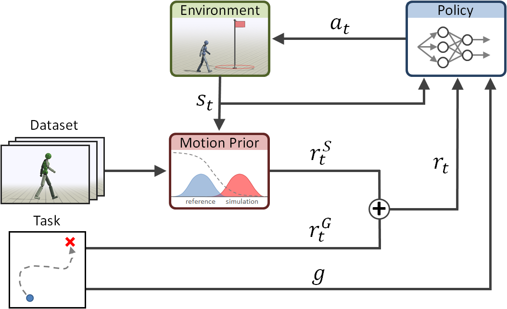
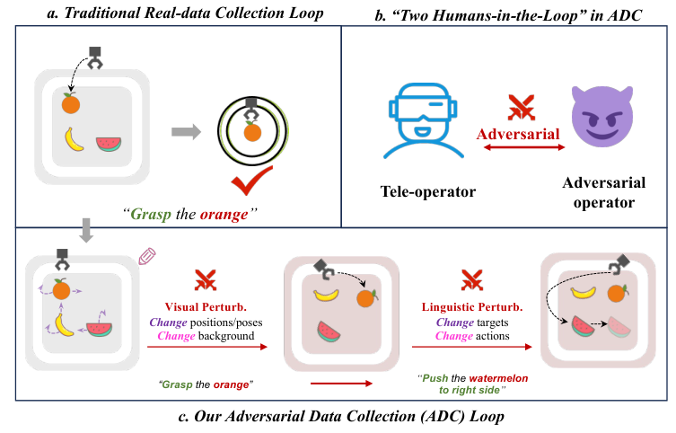
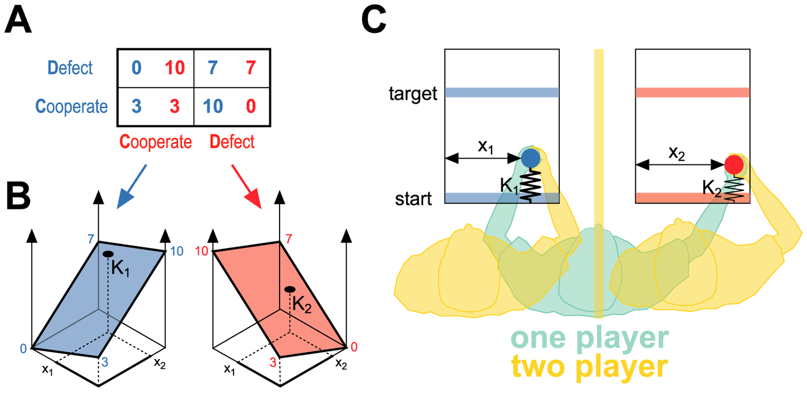
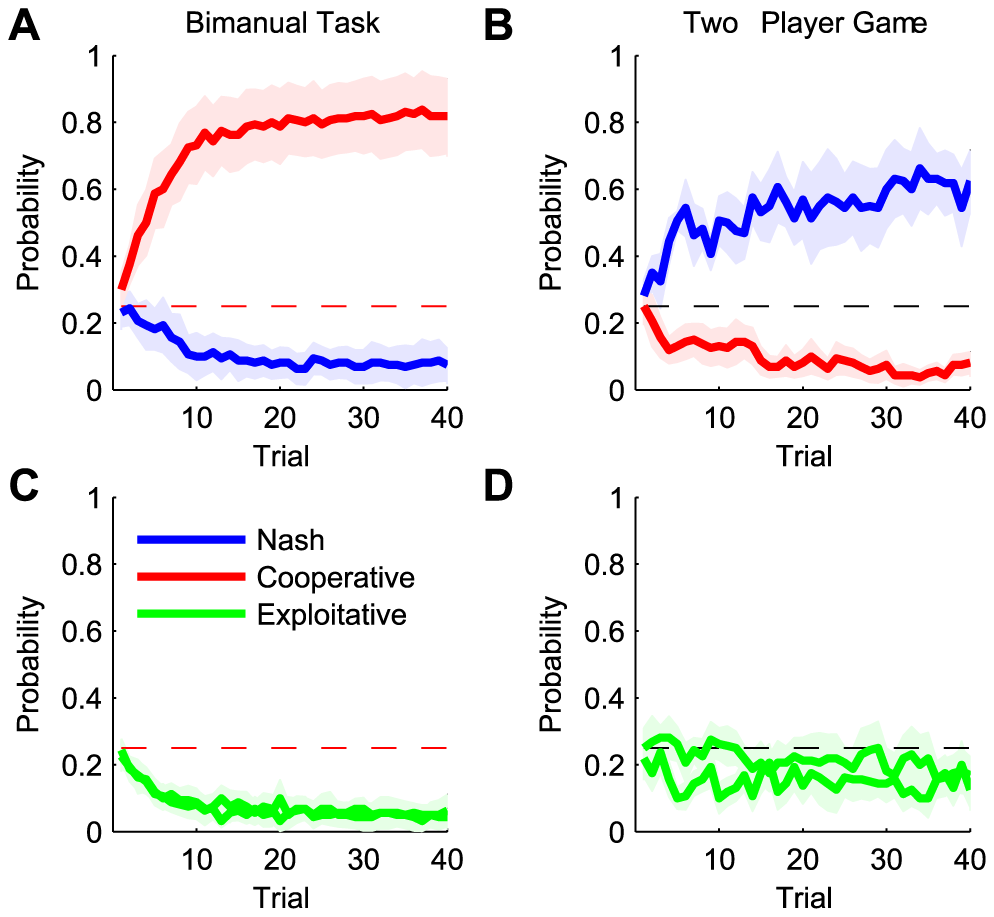

Adversaries and Games for Robot Robustness
Part of a series on robot learning, read against motor neuroscience: variable impedance · adaptation · passivity · safe RL · stiffness geometry · games. The overview is From Sensorimotor Neuroscience to Robot Learning.
Training against an adversary is the game-theoretic route to robustness: the robot plays against disturbances, environments or people chosen to make it fail. In the linear-quadratic case this game is exactly \(H_\infty\) control. It shows both the benefit (a larger stability margin) and the failure mode: past a critical strength the adversary always wins and there is no equilibrium to learn. Gradient play on games has its own dynamics: naive simultaneous updates spiral away from the equilibrium, while extragradient and optimistic updates converge. People playing motor games with each other find Nash equilibria; one person playing both sides with two hands cooperates.
1. Robustness as a game
Robust adversarial RL (Pinto et al., ICML 2017) trains a protagonist \(\pi\) against an adversary \(\nu\) that applies disturbance forces, with opposite rewards:
$$\max_\pi\ \min_{\nu}\ \mathbb E\Big[\sum_t r(s_t, a_t)\Big], \qquad s_{t+1} = f(s_t, a_t, w_t),\ w_t \sim \nu .$$Long before deep RL, this was robust control. Morimoto and Doya (2005) derived robust RL from the \(H_\infty\) formulation: penalise the adversary's effort with a weight \(\gamma^2\) instead of bounding it, and the game's value bounds the gain from disturbance to cost (Başar and Bernhard).
2. What the adversary buys, and when the game breaks
For a scalar unstable plant \(x_{t+1} = 1.2x_t + u_t + w_t\) with cost \(\sum x^2 + u^2 - \gamma^2 w^2\), the game has a saddle point in linear feedback form, \(u = k_u x\) and \(w = k_w x\), for every \(\gamma\) above a critical value \(\gamma^\ast\). I iterated its game Riccati equation to convergence over a range of \(\gamma\) (Figure 1). As the adversary strengthens, the controller becomes more aggressive. Its stability margin (how far the closed-loop pole sits inside the unit circle) grows from 0.59 to 0.996, while its cost under ordinary random noise rises by 24%. At \(\gamma^\ast \approx 1.57\) the maximiser's problem becomes unbounded. There is no saddle point, the adversary can always win, and gradient-based training against it has nothing to converge to.
Huang, Xu, Fang and Zhao (IJCAI 2022) hit the deep-RL version of that wall. An unrestricted adversary generates environments the agent cannot solve, so the agent learns little. Their RRL-Stack formulation makes it a Stackelberg game with an adversary regularised to stay challenging but solvable (Figure 2). In highway merging, the zero-sum agent pays for robustness with low reward even against mild opponents, while RRL-Stack keeps high reward across aggressiveness levels (Figure 3).


3. Gradient play does not just descend
Most adversarial training is simultaneous gradient play: each player takes a step on its own objective. On the simplest zero-sum game, \(\min_x \max_y xy\), the update \((x, y) \leftarrow (x - \eta y,\ y + \eta x)\) has Jacobian eigenvalues \(1 \pm i\eta\), of modulus \(\sqrt{1+\eta^2} > 1\). It spirals away from the equilibrium at the origin for every step size. Alternating the updates gives a bounded cycle that never converges. Korpelevich's extragradient step (1976) evaluates the gradient at a look-ahead point. Optimistic gradient descent (Daskalakis et al., ICLR 2018) adds the correction \(2g_t - g_{t-1}\). Both converge (Figure 4; final distances from the equilibrium after 200 steps: 10.8, 1.09, 0.13, 0.12). The same dynamics sit inside adversarial imitation and RARL. When training oscillates, the cause may be the game dynamics rather than the networks.
4. Adversaries that judge style
A discriminator is an adversary too. Generative adversarial imitation (Ho and Ermon, NeurIPS 2016) trains a policy to fool a classifier that separates its transitions from an expert's. Adversarial Motion Priors (Peng et al., SIGGRAPH 2021) use this to teach physics-based characters athletic skills in the style of motion capture without tracking a reference. A least-squares discriminator \(D(s, s')\) scores state transitions, the style reward is \(r^S = \max\big(0,\ 1 - \tfrac14 (D(s,s') - 1)^2\big)\), and it is added to the task reward (Figure 5). For athletic robot skills this is the route from human motion data to a reward without hand-written style terms.

5. Solving the game, not just playing it
Double oracle (McMahan, Gordon and Blum, ICML 2003) solves large zero-sum games by growing each player's strategy set with best responses and re-solving the small game exactly. PSRO (Lanctot et al., NIPS 2017) generalises it to deep RL with a meta-solver over populations. The quantity that says whether the result is robust is exploitability, how much a best-responding adversary gains against it. It is rarely reported in robotics, and when the adversary's choices can be enumerated it can be computed exactly, as in my minimax note. For safety, ISAACS (L4DC 2023) and gameplay filters (CoRL 2024) co-train a safety policy against an adversary (Safe RL review).
6. People as adversaries
Duan et al. (IROS 2019) had a person perturb a robot during grasp learning and found more robust grasping than with self-supervised training. Adversarial Data Collection (Huang et al., 2025) puts a second operator in the loop who changes objects, scenes and instructions while the first teleoperates, so each demonstration contains recovery (Figure 6).

7. The sensorimotor connection
Braun, Ortega and Wolpert (2009) built motor versions of classic games. Two people each moved a handle against springs whose stiffness depended on both players' lateral positions, so their positions were moves in a game (Figure 7). In the motor prisoner's dilemma, pairs of players converged to the Nash equilibrium. A single person controlling both handles, one with each hand, converged to the cooperative solution (Figure 8). The same payoffs produce different behaviour depending on whether one controller or two own the hands. That is the difference between centralised bimanual control and two independent arm policies.


- Physical coupling as information. Ganesh et al. (2014) connected two people through a virtual elastic band while each tracked a target. Both improved, including the better partner. Interaction forces carried information about the other's estimate. This is the cooperative counterpart of adversarial perturbation.
- Unpredictable opponents raise impedance. Faced with disturbances they cannot predict, people raise stiffness along the dangerous direction (Burdet et al. 2001). That is the robust, worst-case response, paid for in effort, the same trade the \(H_\infty\) controller in Figure 1 makes.
8. What is still rarely measured
- Exploitability. Report how much a best-responding adversary gains, not just performance against the training adversary.
- Whether the game has a solution. Check that the adversary's budget leaves a saddle point; otherwise robust training is chasing nothing.
- Adversaries on belief. Most attacks push forces or perturb observation vectors; few corrupt the structured beliefs a manipulator acts on, such as where it thinks a hole is.